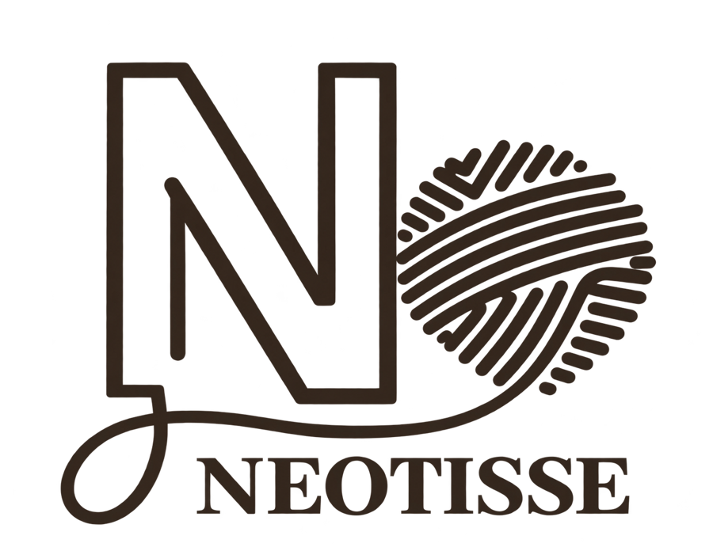

Gestion des cookies
Ce que nous utilisons sur ce site
Nous utilisons Google Analytics pour mesurer l’audience du site (pages consultées, origine des visites, clics sur « Demander un atelier »). Cet outil ne se charge et ne dépose de cookies qu’après votre accord. Si vous refusez, ou tant que vous n’avez pas choisi, aucun cookie de mesure n’est déposé. Nous n’utilisons ni publicité, ni outil de suivi publicitaire.
- Cookies strictement nécessaires : aucun sur ce site. L’espace de gestion des contenus (le Studio Sanity), réservé aux membres de l’association, utilise ses propres cookies de connexion sur son adresse à part : ils ne concernent pas les visiteurs.
- Mémoire de votre choix : quand vous acceptez ou refusez, votre navigateur retient simplement ce choix pour ne plus afficher le bandeau. Ce n’est pas un cookie, rien n’est transmis, et cela ne demande pas de consentement.
- Cookies de mesure d’audience (Google Analytics) : déposés uniquement si vous acceptez. Ils servent à compter les visites et à savoir quelles pages sont utiles. Ils ont une durée de vie limitée (jusqu’à 2 ans pour le principal).
- Cookies publicitaires : aucun.
Votre choix
Vous n’avez pas encore fait de choix.
Contenus de tiers
Hors Google Analytics (décrit plus haut), le site n’intègre aucun contenu extérieur susceptible de déposer des cookies : pas de vidéo, pas d’agenda ni de publication de réseau social affichés directement. Le calendrier, les actualités, les logos des partenaires et les avis sont chargés depuis Sanity, notre outil de gestion des contenus, sans aucun cookie.
Réseaux sociaux. Le lien vers notre page Instagram ne dépose aucun cookie : il vous emmène sur Instagram, qui applique ses propres règles. Si nous affichons un jour directement une publication sur le site, elle ne se chargera qu’après votre accord, et cette page sera mise à jour.
Consulter ou supprimer les cookies
Vous pouvez à tout moment modifier votre choix ci-dessus, et consulter, bloquer ou supprimer les cookies des sites que vous visitez depuis les réglages de votre navigateur :
Pour savoir comment nous traitons vos données, consultez notre politique de confidentialité.